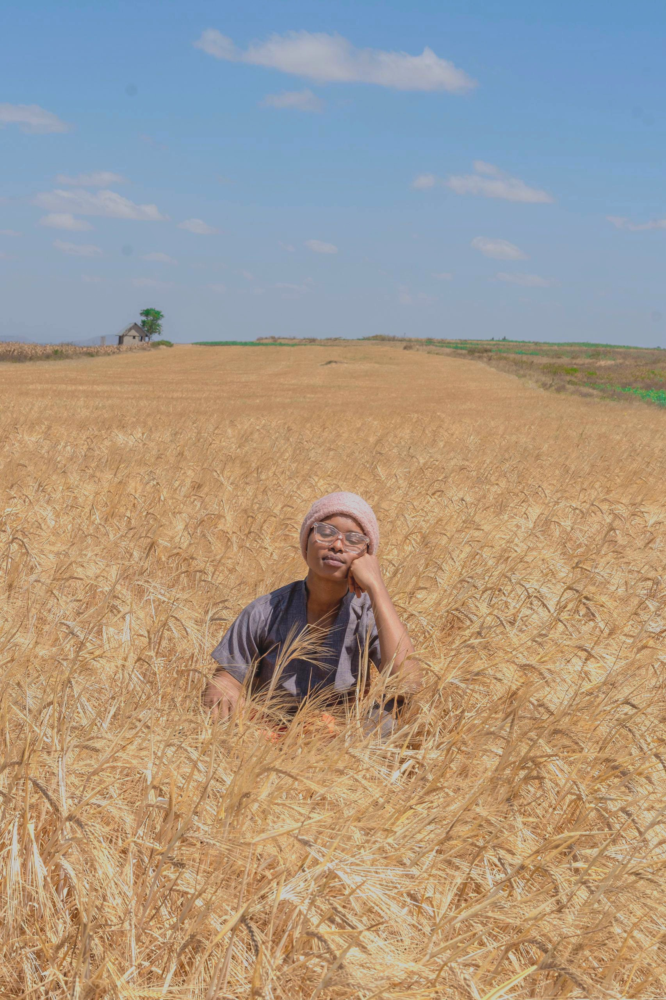
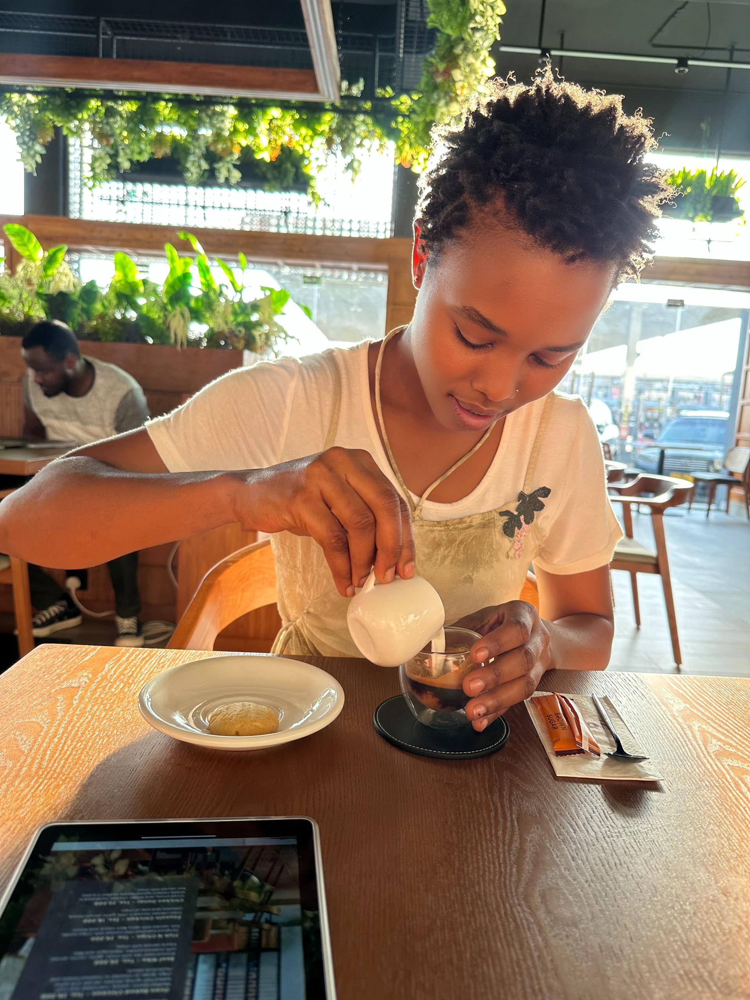
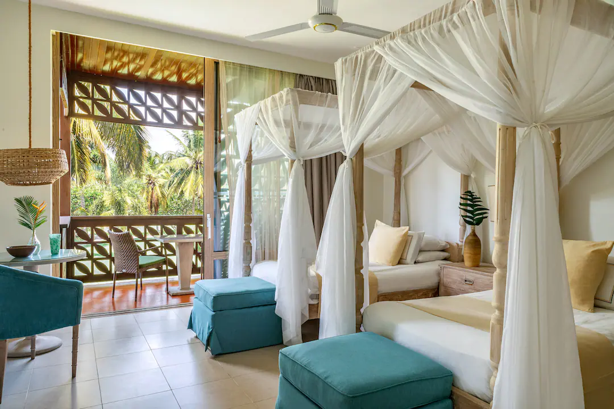

My name is Monica Claud, a hospitality professional, nature lover, and passionate advocate for sustainable tourism in Tanzania.
On my personal development journey, one of the most valuable lessons I learned came through my experience with the Arusha Giraffe Centre (AGC), where I discovered the incredible importance of trees and their role in supporting life, protecting wildlife, and preserving our environment for future generations.
Since then, I have proudly embraced the mission of being a Voice of Trees, raising awareness about the importance of nature while promoting meaningful and responsible travel experiences.
My journey in hospitality began at Pink Flamingo Boutique Hotel after college, where I discovered my passion for welcoming guests from different cultures and helping travelers create unforgettable memories. Today, I combine my love for hospitality, travel, and conservation to help visitors experience the very best of Tanzania.
From safari adventures and Zanzibar beach escapes to authentic cultural experiences, I would be delighted to help curate a journey tailored to your interests, expectations, and budget.
From the experience I have gained working with guests over the years, I can't wait to help curate your perfect journey to Tanzania.
Contact me on WhatsApp to start planning your Tanzanian adventure today.
Discover the beauty of Tanzania through unforgettable landscapes, wildlife, culture, hospitality, and nature.

NATURE CORNER
Welcome to Nature Corner by Voice of Trees. Here you'll find fascinating plants, wildlife, insects, birds, flowers, trees, and hidden natural wonders from across Tanzania. Every image tells a story about our beautiful environment and why it deserves protection.